Overview
Overview
Lecturers weren't put off by the store's distance or its service. They were turned away by uncertainty. Not knowing if an item was in stock meant risking their break on a wasted trip.
Amcos Store is a cooperative store for registered lecturer-members of Ahmadu Bello University, Zaria, Nigeria. Members buy monthly on store credit, and during university strikes the store is a financial safety net. But members couldn't check stock without visiting, and many didn't know the full range the store sold, so patronage became inconsistent.
My task was to align the co-op's goals (steadier patronage, product range awareness) with the user need (clear stock status). I defined success as task efficiency: the time to find an item and check out, the action users repeat most.
testers found an item and checked out in under 30 seconds, down from a reported hour in-store.
Research
Research
Five interviews, three pain points, one root cause: lecturers couldn't know what was in stock.
To design for lecturers' needs, I first had to understand their routines and why the existing process failed. I interviewed 5 registered co-op members with open-ended questions, and three pain points emerged.
Stock uncertainty
Members couldn't trust that items would be available in-store.
I got there tired after a long day and nothing on my list was available.
Prof. Maryam
Time pressure
With tight schedules, many couldn't afford a wasted trip.
With how tight my schedule is, going to the store feels like too much.
Dr. Ahmad
Mental overload
Staples sell out fast, so members had to track when the store restocked or miss out.
Well, you can get items if you go as soon as they restock, but it's really a gamble as important staples run out fast.
Prof. Inabo
lost to an in-store visit, often their entire break, as lecturers described it.
None of the five lecturers had completed a purchase in an e-commerce app. Four knew e-commerce through brands like Jumia but had never used an app, and the fifth had used one but bought nothing. With so little hands-on experience, I used familiar e-commerce patterns and kept the interface minimal.
To see how lecturers actually shop, I mapped the journey from the first need to the in-store purchase. Without that, the solution would be deficient.
- 1Pantry needs ariseUnsure if the store has what I need
- 2Writes grocery listOverwhelmed by remembering every need
- 3In-store experienceTired from the drive, anxious to find what I need
- 4Alternative huntLooks for alternatives for some items
- Pantry needs ariseUnsure if the store has what I need
- Writes grocery listOverwhelmed by remembering every need
- In-store experienceTired from the drive, anxious to find what I need
- Alternative huntLooks for alternatives for some items
The screens below show how the app changes that: finding an item with clear stock status, through to a tracked order.
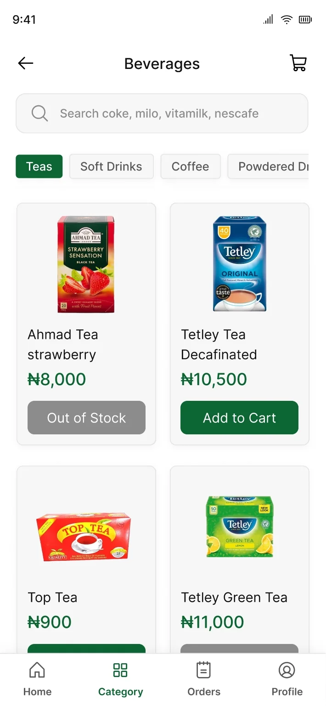
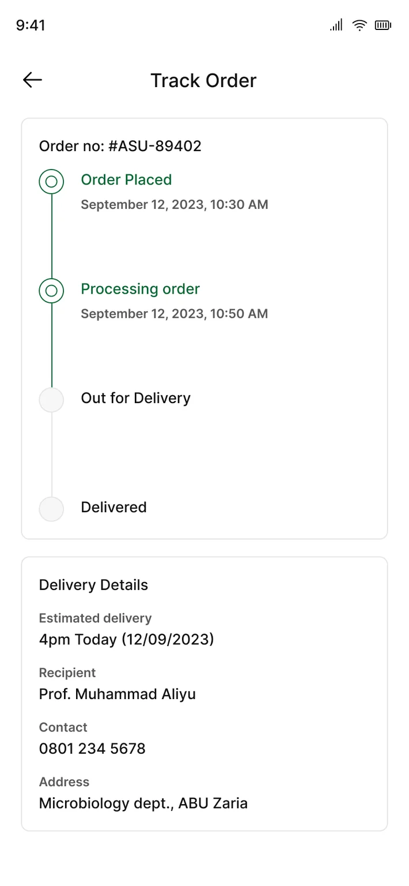
Findings to decisions
Findings to decisions
Testing the first prototype showed where lecturers encountered friction.
I initially planned to test with low-fidelity wireframes, but the first participant couldn't make sense of them without guidance. I moved to a high-fidelity prototype, which all five lecturers tested in semi-moderated sessions of 20 to 30 minutes.
on average to find an item and check out in the first test.
| Finding | Decision |
|---|---|
| Carousels added clutter.“Why are the cards moving? This looks quite busy.” | Removed them and replaced them with short sections, each with a See All button. |
| Switching categories took too many steps.“I want to go to food stuff, oh, I have to move back to the initial page, hmmm okay.” | The Categories page has a quick-switch bar at the top. Each category also shows two products with See All, so no one has to go back. |
| No way to tell what was in stock.“How do I know if it's in stock, or are all items on the app in stock?” | A stock badge on every product: In stock, Limited stock or Out of stock. |
| Text was hard to read.“Ahh, I can't see, this is small, let me get my glasses.” | Switched from Poppins to Inter (taller x-height, more distinct letters) and set most reading text at 18px. |
| Checkout took longer than finding the item, across three screens that repeated information. | Merged into one page: delivery, address, payment and summary. |
Typeface
Before: Poppins
Total 41,90020 semibold
Total 41,90016 medium
Total 41,90016 regular
Total 41,90014 semibold
Total 41,90014 regular
Total 41,90012 regular
After: Inter
Total 41,90032 bold
Total 41,90024 semibold
Total 41,90020 medium
Total 41,90018 medium
Total 41,90016 regular
Total 41,90014 regular
Total 41,90012 semibold
Lecturers are mostly between 35 and 60, an age when near vision often begins to change. Inter's taller x-height and distinct letterforms read faster at a glance.
Homepage
Before
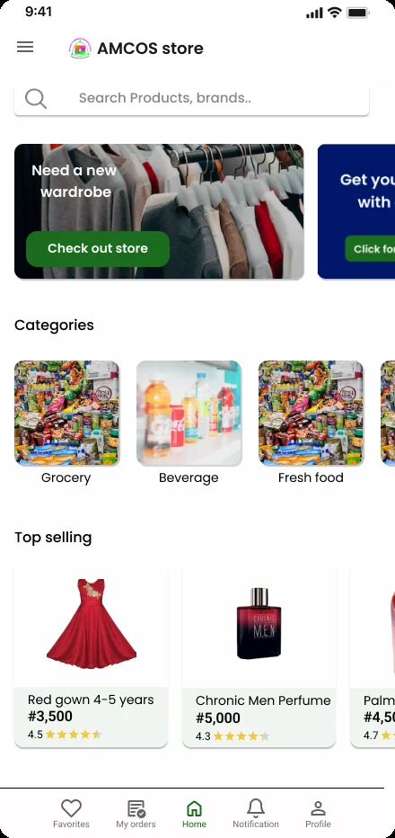
After
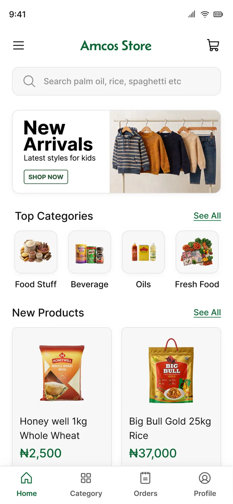
Carousels became short sections with See All. The banner surfaces categories members didn't know the store sold, such as kids' clothing.
Checkout
Before: three screens
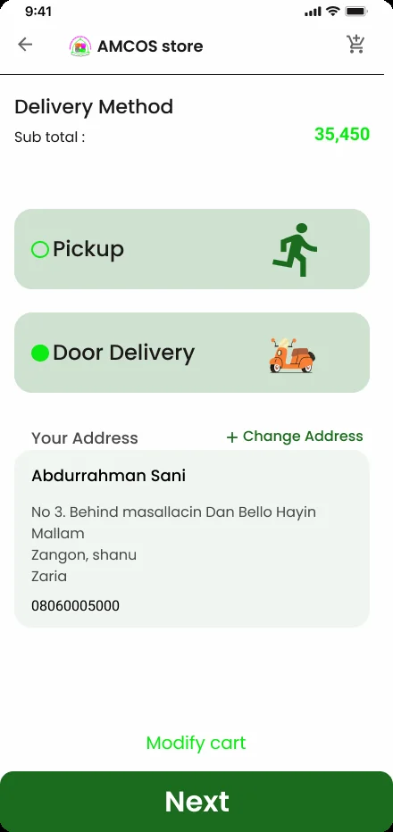
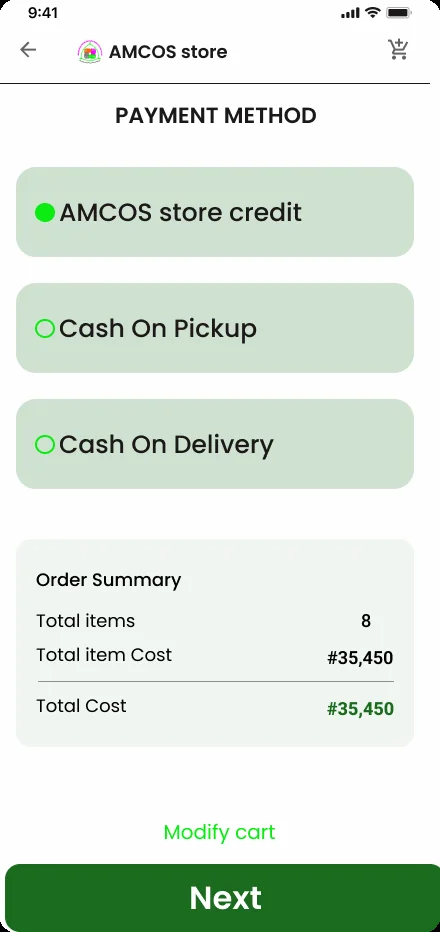
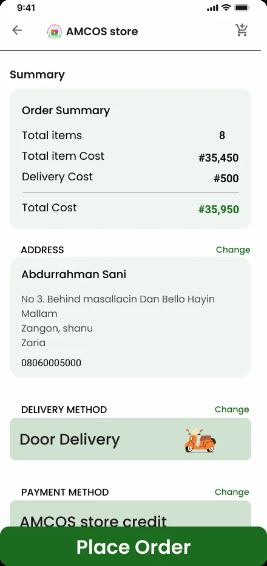
After: one page
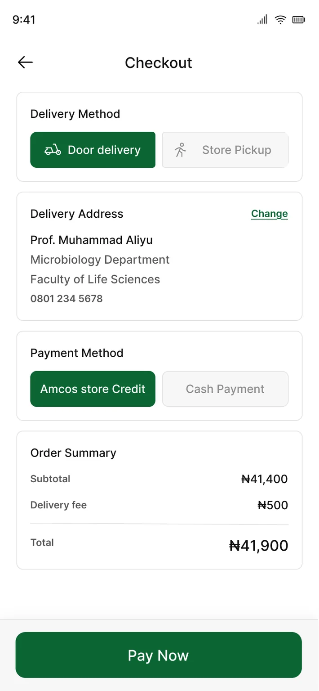
Three screens that repeated delivery, payment and address details became one page.
Product
Product
Add, adjust and re-order, each in one tap.
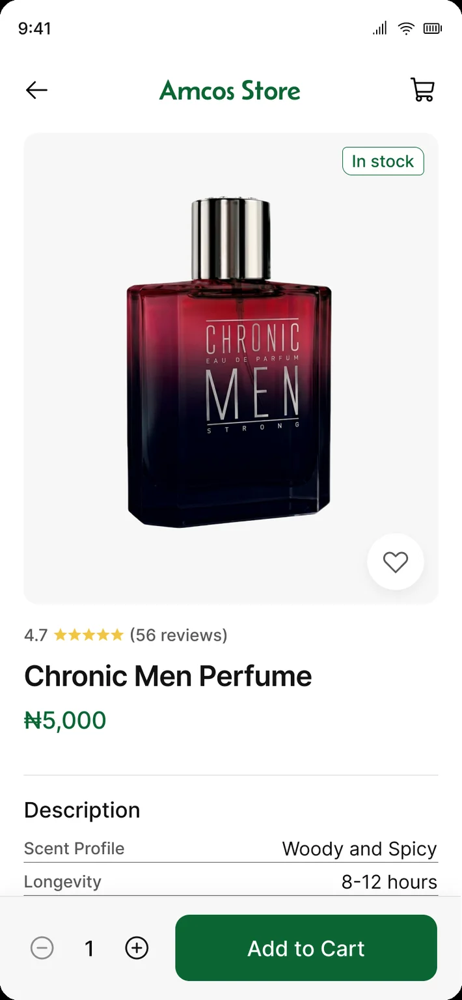
Body text measures 18.7:1, secondary text at least 6.5:1 and white on the green button 7.1:1, all passing WCAG AA. The three badge colors measure 7:1 or higher.
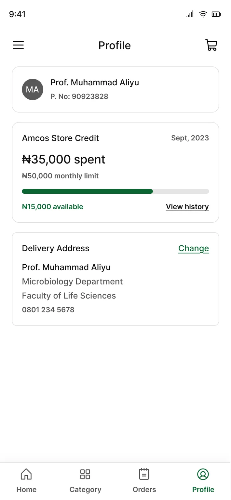
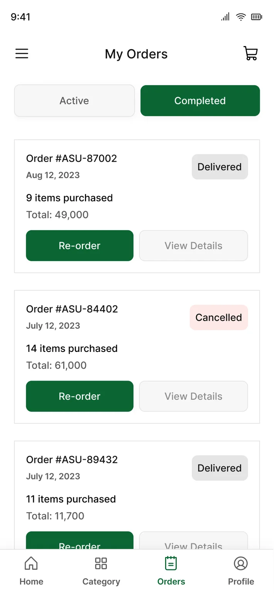
Validation
Validation
Average time on task fell by about 70%, from 86 seconds to 25.
Ten lecturers tested the final prototype. Each chose one of three items (Bournvita, rice or tea), found it, and checked out. I measured active time on task.
Round 1: 5 testers. Round 2: 10 testers.
| Round | Testers | Find | Checkout | Total |
|---|---|---|---|---|
| Round 1First prototype | 3 | 35s | 45s | 1m 20s |
| 2 | 40s | 55s | 1m 35s | |
| Round 2Final design | 4 | 10s | 9s | 19s |
| 5 | 15s | 12s | 27s | |
| 1 | 25s | 15s | 40s |
Lecturers reported losing up to an hour of their break to an in-store visit. In testing, 9 of 10 found their item and checked out in under 30 seconds.
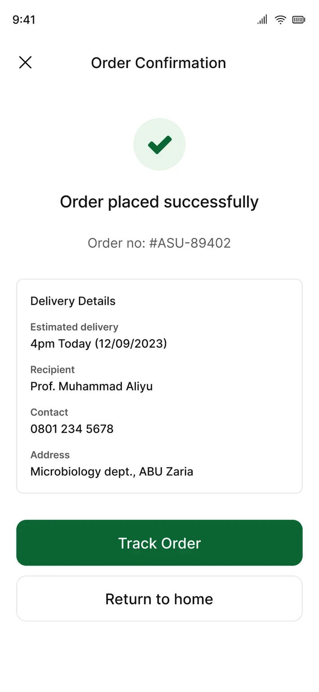
This is nice, the checkout is quite straightforward.
Participant, round 2
Ehn, so this item is in stock and this is out of stock.
Participant, round 2
Outcome
Outcome
The co-op intends to build it locally, but budget has put the build on hold.
I handed the design files to the co-op's managers. Since only co-op members would use the app, and given the co-op's budget, I recommended a locally hosted PWA or internal app over App Store deployment.
The chairman of the store's management team was interested because the app addressed two problems: inconsistent patronage, which meant missed revenue, and members not knowing all the categories the store sold, which left inventory underused.
Reflection
Reflection
Users were the compass: the best changes came from their feedback and friction.
Trends aren't truths
Carousels and long pages are standard in e-commerce apps, but they didn't suit these users. Lecturers found the carousels busy, so I replaced them with short sections and kept the homepage short.
Consider context before fidelity
In future projects, I would consider my testers' context before choosing a fidelity. Lecturers couldn't make sense of low-fidelity wireframes, so I stopped and quickly built a high-fidelity prototype.